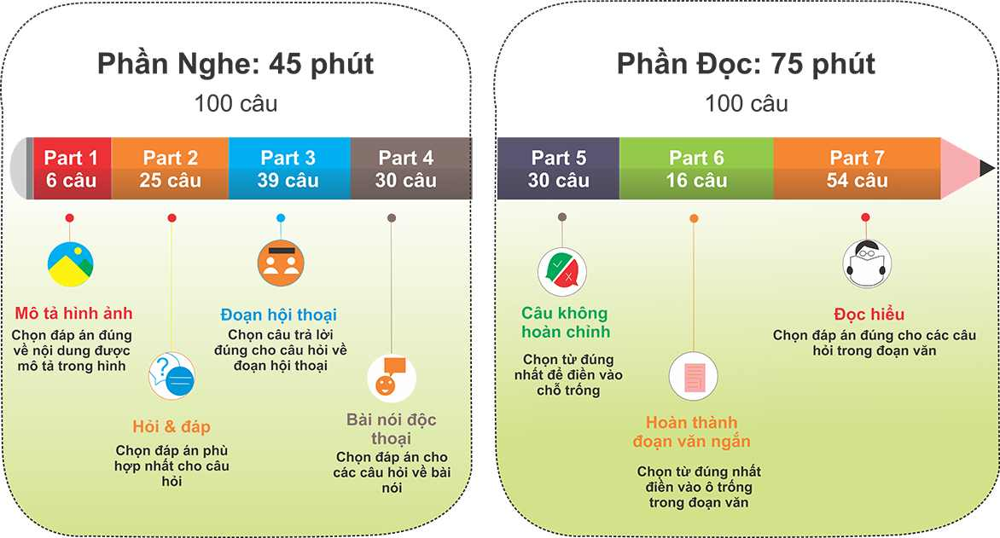

Tham khảo lộ trình trước khi học Toeic


Taking a TOEIC test verifies your current level of English-language proficiency to qualify for a job, or to enter an academic institution to prepare you for a career that uses English in business communication.
xIt can help you stand out and be recruited in a competitive market.
The TOEIC® program offers a series of assessments to measure all four skills of English proficiency – listening, reading, speaking and writing.
The tests measure a range of skill levels, from basic-to-intermediate and advanced level. The test you take depends on what an employer requires, as well as the level of English proficiency required.
Many leading companies, academic institutions and language programs worldwide rely on the TOEIC tests as a fair, objective measure of English-language proficiency for students and business professionals
Over 14,000 organizations across more than 160 countries trust TOEIC® scores to inform the decisions that matter.
TOEIC tests are administered by in-country local ETS Preferred Network members. Test dates and test format vary by country.
To register for a TOEIC test, please use the Contact Us form to find your nearest ETS Preferred Network office.